(Un seul clic gauche avec la souris et attendre que la fenêtre s'ouvre)
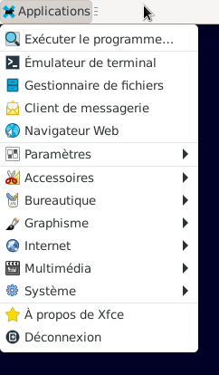
Le menu des Applications permet d'accéder aux applications installées.
Les apllications sont rangées par thème (Accessoires, Bureautique, Graphisme, etc...)
Il se peut que des applications se retrouvent dans des thèmes différents.
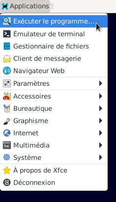
- La fenêtre "Liste des applications" s'ouvre.
- Lancer une application, exemple le Lecteur Multimédia Parole.
Saisir dans l'encadré : parole et valider avec la touche du clavier Entrée ou un Clic gauche > Lancer
Lors de plusieurs recherches d'applications, un menu apparaîtra en dessous de parole un Clic gauche sur l'application recherchée et un Clic gauche > Lancer - L'application de musique "Parole" s'ouvre.
- Fermer le Lecteur Multimédia Parole : Clic gauche > Média (en haut à gauche)
- Une fenêtre apparaît : Clic gauche > Quitter
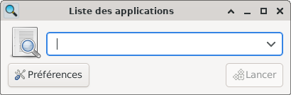
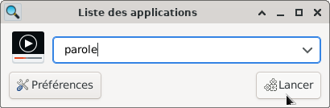
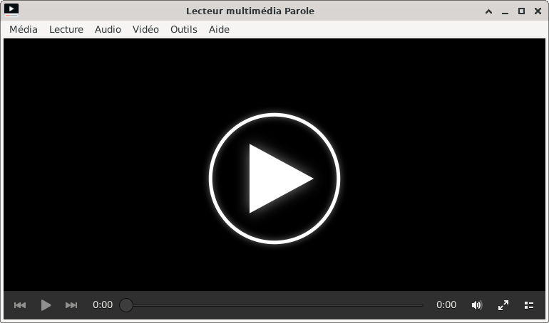
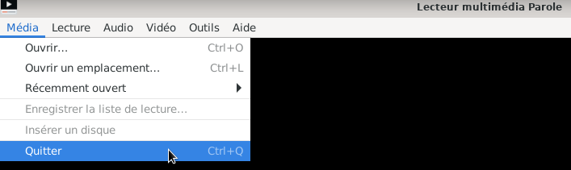
Retourner : Clic gauche > Applications, puis Clic gauche > Emulateur de Terminal
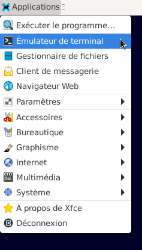
- L'émulateur de Terminal donne accés à la ligne de commande, qu'on ne verra pas dans ce mémo.
Un exemple : saisir parole > valider avec la touche du clavier Entrée - Quitter l'application "Parole" comme vu ci-dessus.
Quitter le Terminal : Clic gauche > Fichier (en haut à gauche) puis Clic gauche > Fermer la fenêtre
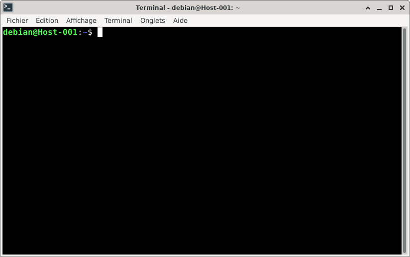
Retourner : Clic gauche > Applications, puis Clic gauche > Gestionnaire de fichiers (consulter)

- Quitter le Gestionnaire de fichiers :
Clic gauche > Fichier (en haut à gauche) puis Clic gauche > Fermer la fenêtre
Retourner : Clic gauche > Applications, puis Clic gauche > Client de messagerie
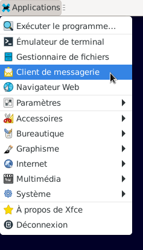
- Lors de l'installation, le client de messagerie n'est pas installé.
Exemple de client de messagerie : Thunderbird permet de recevoir les Emails directement sur le PC - Clic gauche > Annuler
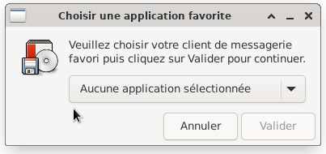
Retourner : Clic gauche > Applications, puis Clic gauche > Navigateur Web (1 seul clic, attendre que le navigateur s'ouvre)

- Le navigateur installé ici est Firefox
Le navigateur permet principalement d'accéder à internet.
Fermer le navigateur : Clic gauche > petite croix en haut à droite
Retourner : Clic gauche > Applications, positionner le pointeur de la souris sur Paramètres
Accés à toutes les applications pour paramétrer le système
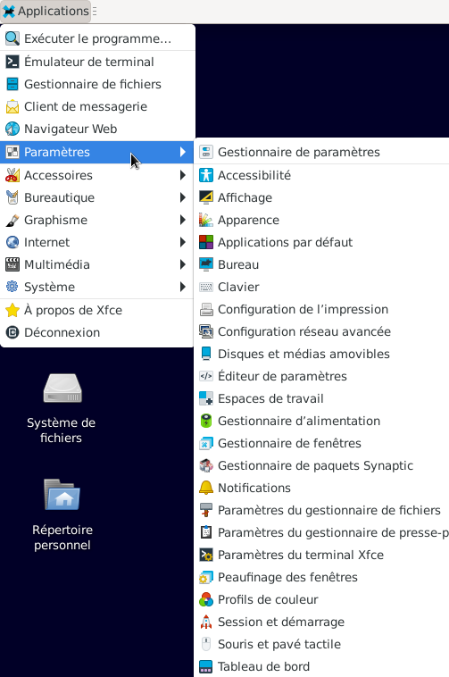
Accés à des applications comme la capture d'écran ou le logiciel de gravure Xfburn qu'on retrouvera aussi dans le menu Multimédia.

Accés à toutes les applications de bureautique comme LibreOffice ou visionneur de documents.
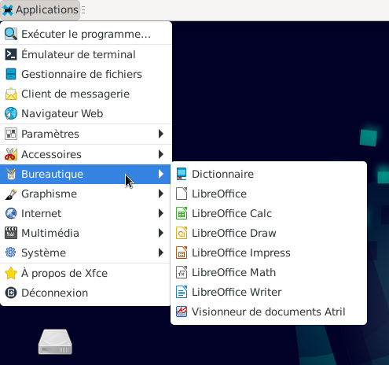
Accés à toutes les applications de graphisme comme la numérisation de scanner ou aussi visionneur de documents.
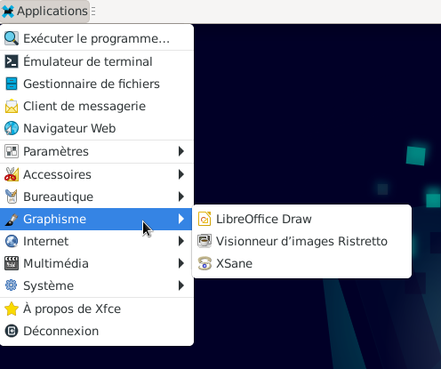
Accés à toutes les applications d'une connexion externe comme par exemple Firefox ou une application pour ouvrir un appareil amovible.
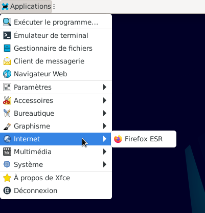
Accés à toutes les applications de multimédia comme Parole ou le contrôle du volume avec PulseAudio.
Exemple : Un Clic gauche > "Lecteur Multimédia Parole" l'application s'ouvre.
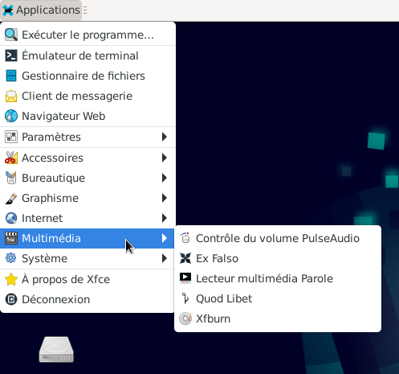
Accés à toutes les applications système comme Synaptic pour les mises à jour ou configurer une imprimante.

Cette méthode est valable pour tous ces menus déroulants qui restent affichés.
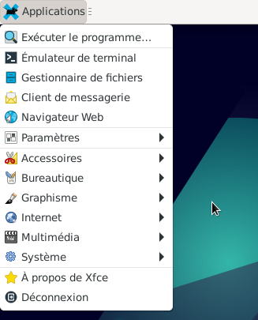
Il ne reste plus qu'à choisir : Eteindre, Redémarrer, Mise en veille, etc...
Ne pas quitter le bureau : Clic gauche > Annuler
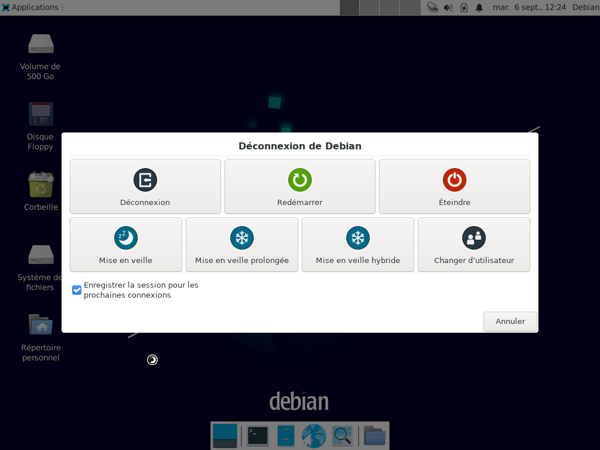
- Retourner sur le bureau
- Positionner le pointeur de la souris n'importe où sur le bureau mais pas sur un icône.
Clic droit, une fenêtre s'ouvre. - Positionner le pointeur de la souris sur "Applications", la liste des applications apparaît.
- Pour fermer cette fenêtre, 1 Clic gauche en dehors de cette fenêtre, comme vu plus haut.
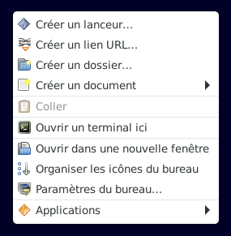
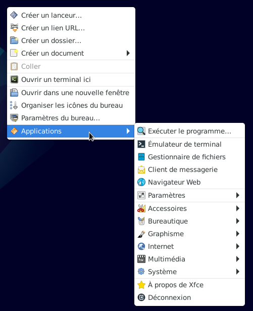
Toujours sur le tableau de bord 1 mais à droite en haut de l'écran.
Les 4 carrés gris correspondent à des espaces de travail différents.
- Celui qui est le plus foncé est celui qui est acif.
- Exemple : Sur le premier espace de travail, "Firefox" peut être ouvert pour un accés à internet
et sur le second une application comme "Parole". peut être ouverte aussi.
Ce qui revient à écouter de la musique tout en surfant sur internet. - Il est aussi possible d'ouvrir plusieurs applications dans le même espace de travail.
Se placer dans le premier espace de travail
Ouvrir l'application "Firefox": Applications > Internet > Firefox ESR (1 clic gauche avec la souris)
Ouvrir l'application "Parole" : Applications > Multimédia > Lecteur Multimédia Parole (1 clic gauche avec la souris) - On est bien dans le premier espace de travail, carré gris foncé
Les 2 applications sont ouvertes
Pour avoir accès à l'application cliquer sur son onglet.
Cliquer plusieurs fois sur les onglets pour comprendre comment tout cela fonctionne.
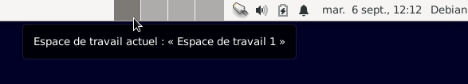
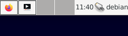
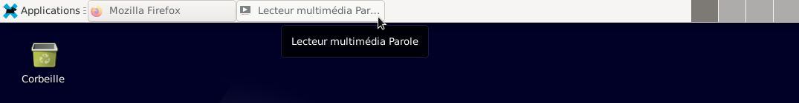
Les périphériques réseaux et les connexions sont gérés par : NetworkManager
Exemple : Internet, Wifi, etc...
- Placer le pointeur de la souris comme sur l'image ci-dessous
La notification "Connexion au réseau Ethernet « Wired connection 1 » active" veut dire :
Le PC est bien connecté à un réseau (qui permet d'accéder à internet) et le nom de la connexion est Wired connection 1 - Clic gauche sur l'icône, une fenêtre apparaît, permettant de se déconnecter
- Clic gauche > Se déconnecter
- Un message apparaît : La connexion réseau a été déconnectée.
Attendre, ce message va disparaître. - L'icône a changé.
Positionner le pointeur de la souris comme l'image ci-dessous, une notification apparaît :
"Aucune connexion au réseau" - Rétablir la connexion : Clic gauche sur l'icône > Wired connection 1 (ce nom peut être changé)
- Un message apparaît : Connexion établie
Attendre, ce message va disparaître. - Clic droit sur cette icône permettra d'avoir une information sur la connexion,
de modifier les connexions > modifier entre autre le nom de cette connexion, etc...
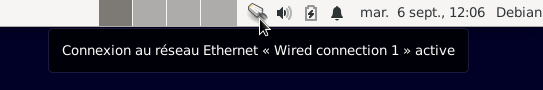
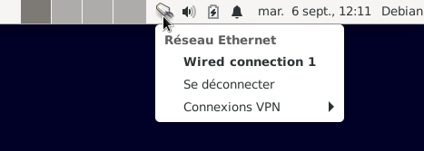
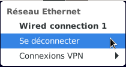
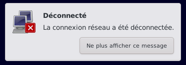
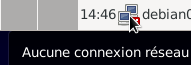
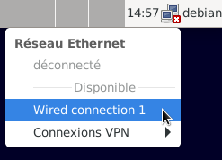
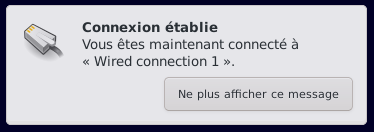

Une notification apparaît en indiquant un volume à 28% (dans cet exemple)
Le son est géré par le serveur PulseAudio
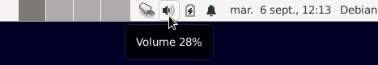
- Clic gauche sur l'icône, une fenêtre apparaît permettant le réglage du volume du son et du micro
Sur un PC fixe, connecter des hauts parleurs pour PC, sur la prise Jack verte de la carte son du PC. - Changer le volume :
Placer le pointeur de la souris comme sur la photo ci-dessous
Maintenir appuyer le bouton gauche de la souris et faire glisser la souris soit vers la gauche ou la droite
Une autre solution : Clic gauche > à gauche ou à droite du curseur
Le volume doit augmenter ou diminuer - Eteindre le son :
Placer le pointeur de la souris comme sur la photo ci-dessous et Clic gauche - Le curseur devient gris et il n'est plus bleu.
Une croix est apparu dans l'icône du haut parleur. Le son est coupé. - Remettre le son :
Placer le pointeur de la souris comme sur la photo ci-dessous et Clic gauche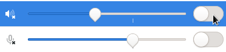
- Dans cette exemple :
Le son est allumé et le micro est éteind.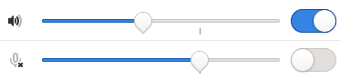
- Clic gauche > Mixeur audio
- L'application s'ouvre
- Fermer le contrôle du volume : Clic gauche > petite croix en haut à droite comme sur l'image ci-dessus.
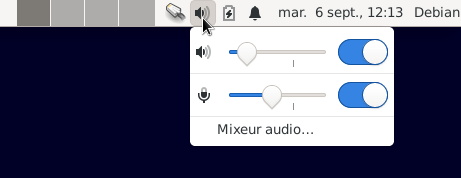
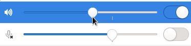
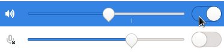
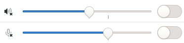
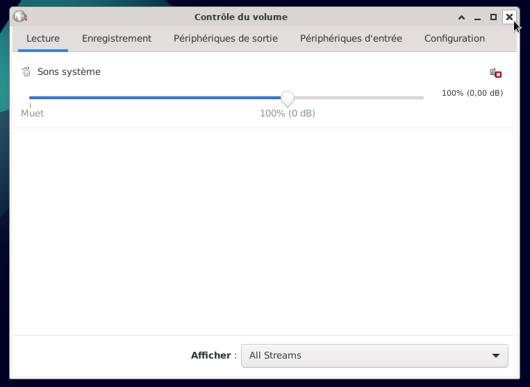
Positionner le pointeur de la souris sur l'icône batterie.
Une notification apparaît, Ordinateur
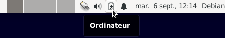
- Clic gauche sur l'icône.
- Cette application est le gestionnaire d'alimentation du PC.
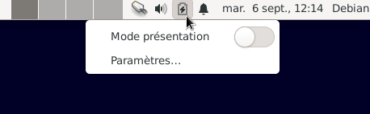
Positionner le pointeur de la souris sur l'icône sonnerie.
Une notification apparaît, Notifications
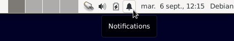
- Clic gauche sur l'icône.
- Paramétrer l'apparition des notifications
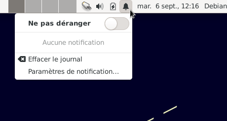
Clic gauche sur l'icône de la date, permet d'afficher le calendrier
Clic droit sur l'icône de la date > Propriétés, permet de paramètrer la date et l'heure.
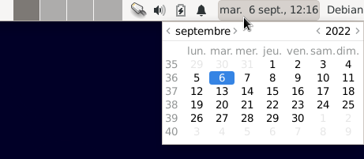
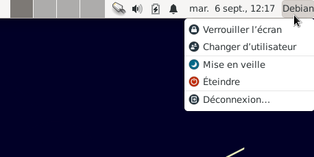
- Cette solution, permet aussi d'éteindre, de déconnecter, de mettre en veille, etc...
Rappel, pour faire disparaître le menu déroulant :
Positionner le pointeur de la souris en dehors de ce menu déroulant et faire un Clic gauche.